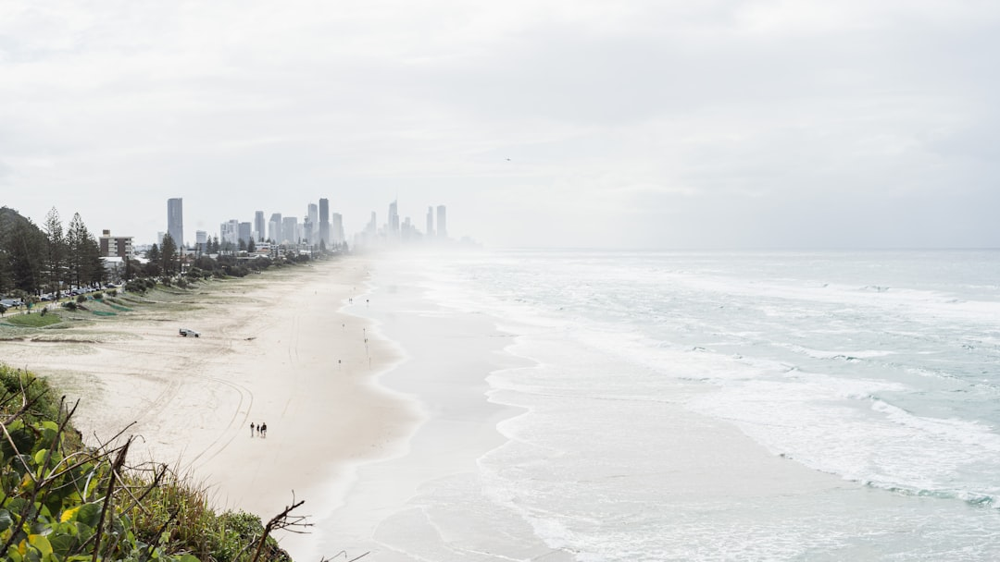

A sound bathroom project starts with three source-backed anchors: wet-area waterproofing is carried out to AS 3740 by licensed waterproofers, each project begins with a written itemised quote, and work over $3,300 is set out under a written Domestic Building Contract. The source page also frames the process in four stages, enquire, clarify the job, quote, renovate, while noting that cost and timing depend on room size, fitting quality, and the amount of plumbing and electrical work involved.
For homeowners comparing bathroom renovations gold coast options, the practical question is whether the room issues, waterproofing scope and quote terms are clear enough before any strip-out, tile selection or scheduling decision is made. See Bath Renovation Gold Coast for the current service details.
Bathroom Renovations Gold Coast Explained
The most useful first step is to define what is actually wrong with the room. The material published by Bath Renovation Gold Coast centres the quote around leaks, awkward layouts, rushed selections, waterproofing allowances and finish level, not around style language alone. That is a better starting point because two quotes are hard to compare if each contractor is solving a different problem.
A leaking shower, a cramped ensuite and a dated family bathroom are not the same job. One may need a focused replacement with membrane and drainage detail, another may need layout work and storage planning, and another may need a full strip-out. Before requesting prices, write down what is failing now, what must improve, and what cannot move, such as plumbing position, access limits or apartment conditions.
Choose the path that matches the scope
The source page separates full bathroom renovations, small bathroom renovations, ensuite renovations, shower replacements and upgrades, waterproofing, and tiling. That matters because a full rebuild is not automatically the right answer. A compact room may benefit more from a cleaner layout, better shower access and improved storage than from adding extra features that increase cost without fixing daily use.
The same source also gives practical examples of where project type changes the brief, including a tired family bathroom in Nerang, a holiday-let ensuite in Surfers Paradise, and a leaking shower in Labrador. Those examples are useful because they show how the real decision sits in the room condition and intended use. Ask which parts of the room are being retained, what is being replaced, and whether the quote covers demolition, tiling and final fit-off in a single scope.
Waterproofing and paperwork should be explicit
Two of the clearest checks on the source page are waterproofing and documentation. It states that wet-area waterproofing is carried out to AS 3740 by licensed waterproofers, with aspect certification on completion. It also states that every project begins with a clear, itemised quote, and that work over $3,300 is documented under a written Domestic Building Contract.
Those points are useful because they turn a vague comparison into a specific one. Instead of asking only for a price, ask whether the quote spells out the wet-area scope, demolition assumptions, tiling extent, fit-off inclusions and access constraints. If one proposal is cheaper because key items are left broad or unstated, that is not necessarily a better offer. It may simply mean more assumptions have been pushed later into the job.
Gold Coast context should change the brief
The local angle on the source page is practical. It says the first questions account for local homes, access, humidity and apartment rules. That is stronger than dropping suburb names without context because it tells you what may alter scope before work starts. A walk-up apartment, a compact beachside ensuite and a larger hinterland-edge bathroom can each create different access or sequencing questions even when the finish standard is similar.
This is where owners should push for detail. If the property is in an apartment, ask what access conditions affect demolition, waste removal and trade sequencing. If the room has constant moisture issues, ask how the waterproofing and tiling sequence is being handled. If the bathroom feels cramped, ask whether the proposal improves movement and storage or simply swaps finishes. Locality is useful only when it changes the renovation decision.
Use the four-step process to compare quotes properly
The source page sets out four steps, enquire, clarify the job, receive a written quote, then renovate once approved. The value is not the sequence by itself, it is the output expected from each stage. An enquiry should capture suburb or postcode, rough budget and what you want changed. Clarifying the job should draw out room issues, access details and must-have outcomes so the site visit starts with usable information.
The written quote is the point where decision quality rises or falls. The same source says renovation costs and timelines vary widely with room size, fitting quality, and how much plumbing and electrical work is needed, so early figures are planning ranges only. Before approving work, check whether the quote matches the actual room problem, names the main inclusions and exclusions, and reflects the type of renovation the room really needs. That produces a cleaner approval decision and a more realistic handover path.
- Define the room issue. List the current problems, the must-keep elements and the result you want before asking for a quote.
- Sort the likely scope. Work out whether the room points to a full renovation, a compact refit, an ensuite update or a shower-focused job.
- Check the quote detail. Confirm that waterproofing, tiling, fit-off, demolition assumptions and contract requirements are stated in writing.
- Approve the matched option. Choose the proposal that best fits the room type, access conditions and finish level you actually need.
| Situation | Likely focus | What to confirm in the quote |
|---|---|---|
| Tired or leaking main bathroom | Full strip-out, layout, waterproofing, tiling and fit-off | Extent of demolition, wet-area scope, plumbing and electrical allowances |
| Compact bathroom | Space-smart refit, storage, shower access and cleaner layout | What changes the layout, what stays, and any access constraints |
| Leaking or dated shower | Membrane, drainage and screen details before fresh tiles | Whether the work is replacement, repair, or both |
| Ensuite upgrade | Better function for the main bedroom and daily use | Vanity, shower, storage and fit-off inclusions |
Common questions
What should be clarified before the site visit? The source page points to the issues that affect the quote most, including leaks, layout problems, waterproofing allowance, finish level and access detail. If those points are clear early, the site visit starts with a more useful brief and fewer assumptions.
Does every project need a full strip-out? No. The source page separates full renovations from small bathroom renovations, ensuite renovations, shower replacements, waterproofing and tiling. The better choice depends on the room problem, what must change, and what can reasonably stay.
What paperwork should an owner expect? The source page states that each project begins with a clear, itemised quote, and that work over $3,300 comes with a written Domestic Building Contract. It also states that wet-area waterproofing is carried out to AS 3740 by licensed waterproofers, with aspect certification on completion.
This guide covers how to brief, compare and approve a bathroom renovation scope on the Gold Coast using the source page's stated process and inclusions.